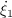
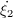
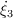
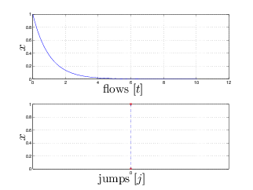
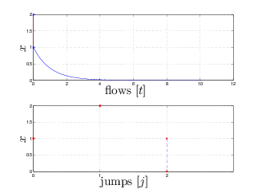
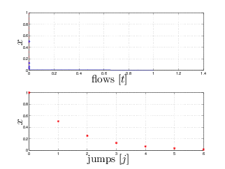
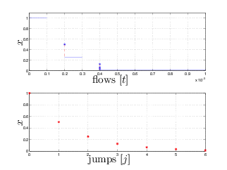

on a state space ℝn with input space ℝm is defined by the following objects:
on a state space ℝn with input space ℝm is defined by the following objects:
Hybrid Equations (HyEQ) Toolbox v2.03
A Toolbox for Simulating Hybrid Systems in
MATLAB/Simulink®;
Ricardo G. Sanfelice
University of California
Santa Cruz, CA 95064
USA
David A. Copp
University of California
Santa Barbara, CA 93109
USA
Pablo Nanez
Universidad de Los Andes
Colombia
April 10, 2016
Abstract
This note describes the Hybrid Equations (HyEQ) Toolbox implemented in MATLAB/Simulink for the simulation of hybrid dynamical systems. This toolbox is capable of simulating individual and interconnected hybrid systems where multiple hybrid systems are connected and interact such as a bouncing ball on a moving platform, fireflies synchronizing their flashing, and more. The Simulink implementation includes four basic blocks that define the dynamics of a hybrid system. These include a flow map, flow set, jump map, and jump set. The flows and jumps of the system are computed by the integrator system which is comprised of blocks that compute the continuous dynamics of the hybrid system, trigger jumps, update the state of the system and simulation time at jumps, and stop the simulation. We also describe a “lite simulator” which allows for faster simulation.
To get started, a webinar introducing the HyEQ Toolbox is available at
http://www.mathworks.com/videos/hyeq-a-toolbox-for-simulation-of-hybrid-dynamical-systems-81992.html
A free two-step registration is required by Mathworks.
A hybrid system is a dynamical system with continuous and discrete dynamics. Several mathematical models for
hybrid systems have appeared in literature. In this paper, we consider the framework for hybrid systems used in
[3,4], where a hybrid system on a state space ℝn with input space ℝm is defined by the following objects:
We consider the simulation in MATLAB/Simulink of hybrid systems = (C,f,D,g) written as
The flow map f defines the continuous dynamics on the flow set C, while the jump map g defines the discrete
dynamics on the jump set D. These objects are referred to as the data of the hybrid system , which at times is
explicitly denoted as = (C,f,D,g). We illustrate this framework in a simple, yet rich in behavior, hybrid
system.
Example 1.1 (bouncing ball system) Consider a model for a bouncing ball written as
where γ > 0 is the gravity constant and λ ∈ [0,1) is the restitution coefficient. In this model, we consider the ball to be bouncing on a floor at a height of 0. This model is re-visited as an example in Section 3 and Section 5. _The remainder of this note is organized as follows. In Section 2, we describe how to install the HyEQ Toolbox in MATLAB. In Section 3, we introduce the Lite HyEQ Simulator for solving hybrid systems without inputs. In Section 4, we introduce the HyEQ Simulator implemented in Simulink for solving single and interconnected hybrid systems with inputs. In Section 5, we work through several examples for the simulation of single and interconnected hybrid systems. In Section 6, we give directions to where the simulator files can be downloaded.
The following procedure describes how to install the Hybrid Equations (HyEQ) Toolbox in MATLAB. This installation adds useful .m files to the MATLAB library and several blocks to the Simulink block library.
Steps for installation:
Now the HyEQ Toolbox is ready for use.
If you wish to uninstall the HyEQ Toolbox from MATLAB, simply run the tbclean.m file inside the HyEQ_Toolbox_V2_03 folder, and follow the on-screen prompts.
One way to simulate hybrid systems is to use ODE function calls with events in MATLAB (see, e.g., [2]). Such an implementation gives fast simulation of a hybrid system.
In the lite HyEQ solver, four basic functions are used to define the data of the hybrid system as in (1)
(without inputs):
Our Lite HyEQ Simulator uses a main function run.m to initialize, run, and plot solutions for the simulation, functions f.m, C.m, g.m, and D.m to implement the data of the hybrid system, and HyEQsolver.m which will solve the differential equations by integrating the continuous dynamics, ẋ = f(x), and jumping by the update law x+ = g(x). The ODE solver called in HyEQsolver.m initially uses the initial or most recent step size, and after each integration, the algorithms in HyEQsolver.m check to see if the solution is in the set C, D, or neither. Depending on which set the solution is in, the simulation is accordingly reset following the dynamics given in f or g, or the simulation is stopped. This implementation is fast because it also does not store variables to the workspace and only uses built-in ODE function calls.
Time and jump horizons are set for the simulation using TSPAN = [TSTART TFINAL] as the time interval of the simulation and JSPAN = [JSTART JSTOP] as the interval for the number of discrete jumps allowed. The simulation stops when either the time or jump horizon, i.e. the final value of either interval, is reached.
The example below shows how to use the HyEQ solver to simulate a bouncing ball.
Example 1.2 (bouncing ball with Lite HyEQ Solver) Consider the hybrid system model for the bouncing ball with data given in Example 1.1.
For this example, we consider the ball to be bouncing on a floor at zero height. The constants for the bouncing ball system are γ = 9.81 and λ = 0.8. The following procedure is used to simulate this example in the Lite HyEQ Solver:
Example code for each of the MATLAB files run.m, f.m, C.m, g.m, and D.m is given below.
1 function run
2 % initial conditions
3 x1_0 = 1;
4 x2_0 = 0;
5 x0 = [x1_0;x2_0];
6 % simulation horizon
7 TSPAN=[0 10];
8 JSPAN = [0 20];
9 % rule for jumps
10 % rule = 1 -> priority for jumps
11 % rule = 2 -> priority for flows
12 rule = 1;
13 options = odeset('RelTol',1e-6,'MaxStep',.1);
14 % simulate
15 [t,j,x] = HyEQsolver(@f,@g,@C,@D,x0,TSPAN,JSPAN,rule,options);
16 % plot solution
17 figure(1) % position
18 clf
19 subplot(2,1,1),plotflows(t,j,x(:,1))
20 grid on
21 ylabel('x1')
22 subplot(2,1,2),plotjumps(t,j,x(:,1))
23 grid on
24 ylabel('x1')
25 figure(2) % velocity
26 clf
27 subplot(2,1,1),plotflows(t,j,x(:,2))
28 grid on
29 ylabel('x2')
30 subplot(2,1,2),plotjumps(t,j,x(:,2))
31 grid on
32 ylabel('x2')
33 % plot hybrid arc
34 figure(3)
35 plotHybridArc(t,j,x)
36 xlabel('j')
37 ylabel('t')
38 zlabel('x1')
39 grid on
40 view(37.5,30)
1 function xdot = f(x)
2 % state
3 x1 = x(1);
4 x2 = x(2);
5 % differential equations
6 xdot = [x2 ; -9.81];
7 end
1 function [value discrete] = C(x)
2 x1 = x(1);
3 if x1 >= 0
4 value = 1;
5 else
6 value = 0;
7 end
8 end
1 function xplus = g(x)
2 % state
3 x1 = x(1);
4 x2 = x(2);
5 xplus = [-x1 ; -0.8⋆x2];
6 end
1 function inside = D(x)
2 x1 = x(1);
3 x2 = x(2);
4 if (x1 <= 0 && x2 <= 0)
5 inside = 1;
6 else
7 inside = 0;
8 end
9 end
A solution to the bouncing ball system from x(0,0) = [1,0]⊤ and with TSPAN = [0 10],JSPAN = [0 20], rule = 1, is depicted in Figure 1(a) (height) and Figure 1(b) (velocity). Both the projection onto t and j are shown. Figure 2 depicts the corresponding hybrid arc for the position state.
For MATLAB files of this example, see Examples/Example_1.2. _
The solver function HyEQsolver solves the hybrid system using three different functions as shown below. First, the
flows are calculated using the built-in ODE solver function ODE45 in MATLAB. If the solution leaves the flow set C,
the discrete event is detected using the function zeroevents as shown in Section 3.1.1. When the state jumps, the
next value of the state is calculated via the jump map g using the function jump as shown in Section
3.1.2.
1 function [t j x] = HyEQsolver(f,g,C,D,x0,TSPAN,JSPAN,rule,options,solver)
2 %HYEQSOLVER solves hybrid equations.
3 % Syntax: [t j x] = HYEQSOLVER(f,g,C,D,x0,TSPAN,JSPAN,rule,options,solver)
4 % computes solutions to the hybrid equations
5 %
6 % \dot{x} = f(x,t,j) x \in C x^+ = g(x,t,j) x \in D
7 %
8 % where x is the state, f is the flow map, g is the jump map, C is the
9 % flow set, and D is the jump set. It outputs the state trajectory (t,j)
10 % -> x(t,j), where t is the flow time parameter and j is the jump
11 % parameter.
12 %
13 % x0 defines the initial condition for the state.
14 %
15 % TSPAN = [TSTART TFINAL] is the time interval. JSPAN = [JSTART JSTOP] is
16 % the interval for discrete jumps. The algorithm stop when the first
17 % stop condition is reached.
18 %
19 % rule (optinal parameter) - rule for jumps
20 % rule = 1 (default) -> priority for jumps rule = 2 -> priority for
21 % flows
22 %
23 % options (optinal parameter) - options for the solver see odeset f.ex.
24 % options = odeset('RelTol',1e-6);
25 % options = odeset('InitialStep',eps);
26 %
27 % solver (optinal parameter. String) - selection of the desired ode
28 % solver. All ode solvers are suported, exept for ode15i. See help
29 % odeset for detailed information.
30 %
31 % Example: Bouncing ball with Lite HyEQ Solver
32 %
33 % % Consider the hybrid system model for the bouncing ball with data given in
34 % % Example 1.2. For this example, we consider the ball to be bouncing on a
35 % % floor at zero height. The constants for the bouncing ball system are
36 % % \gamma=9.81 and \lambda=0.8. The following procedure is used to
37 % % simulate this example in the Lite HyEQ Solver:
38 %
39 % % ⋆ Inside the MATLAB script run_ex1_2.m, initial conditions, simulation
40 % % horizons, a rule for jumps, ode solver options, and a step size
41 % % coefficient are defined. The function HYEQSOLVER.m is called in order to
42 % % run the simulation, and a script for plotting solutions is included.
43 % % ⋆ Then the MATLAB functions f_ex1_2.m, C_ex1_2.m, g_ex1_2.m, D_ex1_2.m
44 % % are edited according to the data given below.
45 % % ⋆ Finally, the simulation is run by clicking the run button in
46 % % run_ex1_2.m or by calling run_ex1_2.m in the MATLAB command window.
47 %
48 % % For further information, type in the command window:
49 % helpview(['Example_1_2.html']);
50 %
51 % % Define initial conditions
52 % x1_0 = 1;
53 % x2_0 = 0;
54 % x0 = [x1_0; x2_0];
55 %
56 % % Set simulation horizon
57 % TSPAN = [0 10];
58 % JSPAN = [0 20];
59 %
60 % % Set rule for jumps and ODE solver options
61 % %
62 % % rule = 1 -> priority for jumps
63 % %
64 % % rule = 2 -> priority for flows
65 % %
66 % % set the maximum step length. At each run of the
67 % % integrator the option 'MaxStep' is set to
68 % % (time length of last integration)⋆maxStepCoefficient.
69 % % Default value = 0.1
70 %
71 % rule = 1;
72 %
73 % options = odeset('RelTol',1e-6,'MaxStep',.1);
74 %
75 % % Simulate using the HYEQSOLVER script
76 % % Given the matlab functions that models the flow map, jump map,
77 % % flow set and jump set (f_ex1_2, g_ex1_2, C_ex1_2, and D_ex1_2
78 % % respectively)
79 %
80 % [t j x] = HYEQSOLVER( @f_ex1_2,@g_ex1_2,@C_ex1_2,@D_ex1_2,...
81 % x0,TSPAN,JSPAN,rule,options,'ode45');
82 %
83 % % plot solution
84 %
85 % figure(1) % position
86 % clf
87 % subplot(2,1,1),plotflows(t,j,x(:,1))
88 % grid on
89 % ylabel('x1')
90 %
91 % subplot(2,1,2),plotjumps(t,j,x(:,1))
92 % grid on
93 % ylabel('x1')
94 %
95 % figure(2) % velocity
96 % clf
97 % subplot(2,1,1),plotflows(t,j,x(:,2))
98 % grid on
99 % ylabel('x2')
100 %
101 % subplot(2,1,2),plotjumps(t,j,x(:,2))
102 % grid on
103 % ylabel('x2')
104 %
105 % % plot hybrid arc
106 %
107 % figure(3)
108 % plotHybridArc(t,j,x)
109 % xlabel('j')
110 % ylabel('t')
111 % zlabel('x1')
112 %
113 % % plot solution using plotHarc and plotHarcColor
114 %
115 % figure(4) % position
116 % clf
117 % subplot(2,1,1), plotHarc(t,j,x(:,1));
118 % grid on
119 % ylabel('x_1 position')
120 % subplot(2,1,2), plotHarc(t,j,x(:,2));
121 % grid on
122 % ylabel('x_2 velocity')
123 %
124 %
125 % % plot a phase plane
126 % figure(5) % position
127 % clf
128 % plotHarcColor(x(:,1),j,x(:,2),t);
129 % xlabel('x_1')
130 % ylabel('x_2')
131 % grid on
132 %
133 %--------------------------------------------------------------------------
134 % Matlab M-file Project: HyEQ Toolbox @ Hybrid Systems Laboratory (HSL),
135 % https://hybrid.soe.ucsc.edu/software
136 % http://hybridsimulator.wordpress.com/
137 % Filename: HYEQSOLVER.m
138 %--------------------------------------------------------------------------
139 % See also HYEQSOLVER, PLOTARC, PLOTARC3, PLOTFLOWS, PLOTHARC,
140 % PLOTHARCCOLOR, PLOTHARCCOLOR3D, PLOTHYBRIDARC, PLOTJUMPS.
141 % Copyright @ Hybrid Systems Laboratory (HSL),
142 % Revision: 0.0.0.3 Date: 04/7/2016 11:50:00
143
144
145 if ~exist('rule','var')
146 rule = 1;
147 end
148
149 if ~exist('options','var')
150 options = odeset();
151 end
152
153 if ~exist('solver','var')
154 solver = 'ode45';
155 end
156
157 odeX = str2func(solver);
158 nargf = nargin(f);
159 nargg = nargin(g);
160 nargC = nargin(C);
161 nargD = nargin(D);
162
163
164
165 % simulation horizon
166 tstart = TSPAN(1);
167 tfinal = TSPAN(end);
168 jout = JSPAN(1);
169 j = jout(end);
170
171 % simulate
172 tout = tstart;
173 [rx,cx] = size(x0);
174 if rx == 1
175 xout = x0;
176 elseif cx == 1
177 xout = x0.';
178 else
179 error('Error, x0 does not have the proper size')
180 end
181
182 % Jump if jump is prioritized:
183 if rule == 1
184 while (j<JSPAN(end))
185 % Check if value it is possible to jump current position
186 insideD = fun_wrap(xout(end,:).',tout(end),j,D,nargD);
187 if insideD == 1
188 [j tout jout xout] = jump(g,j,tout,jout,xout,nargg);
189 else
190 break;
191 end
192 end
193 end
194 fprintf('Completed: %3.0f%%',0);
195 while (j < JSPAN(end) && tout(end) < TSPAN(end))
196 options = odeset(options,'Events',@(t,x) zeroevents(x,t,j,C,D,...
197 rule,nargC,nargD));
198 % Check if it is possible to flow from current position
199 insideC = fun_wrap(xout(end,:).',tout(end),j,C,nargC);
200 if insideC == 1
201 [t,x] = odeX(@(t,x) fun_wrap(x,t,j,f,nargf),[tout(end) tfinal],...
202 xout(end,:).', options);
203 nt = length(t);
204 tout = [tout; t];
205 xout = [xout; x];
206 jout = [jout; j⋆ones(1,nt)'];
207 end
208
209 %Check if it is possible to jump
210 insideD = fun_wrap(xout(end,:).',tout(end),j,D,nargD);
211 if insideD == 0
212 break;
213 else
214 if rule == 1
215 while (j<JSPAN(end))
216 % Check if it is possible to jump from current position
217 insideD = fun_wrap(xout(end,:).',tout(end),j,D,nargD);
218 if insideD == 1
219 [j tout jout xout] = jump(g,j,tout,jout,xout,nargg);
220 else
221 break;
222 end
223 end
224 else
225 [j tout jout xout] = jump(g,j,tout,jout,xout,nargg);
226 end
227 end
228 fprintf('\b\b\b\b%3.0f%%',max(100⋆j/JSPAN(end),100⋆tout(end)/TSPAN(end)));
229 end
230 t = tout;
231 x = xout;
232 j = jout;
233 fprintf('\nDone\n');
234 end
235
1 function [value,isterminal,direction] = zeroevents(x,t,j,C,D,rule,nargC,nargD)
2 switch rule
3 case 1 % -> priority for jumps
4 isterminal(1) = 1; % InsideC
5 isterminal(2) = 1; % Inside(C \cap D)
6 isterminal(3) = 1; % OutsideC
7 direction(1) = -1; % InsideC
8 direction(2) = -1; % Inside(C \cap D)
9 direction(3) = 1; % OutsideC
10 case 2 %(default) -> priority for flows
11 isterminal(1) = 1; % InsideC
12 isterminal(2) = 0; % Inside(C \cap D)
13 isterminal(3) = 1; % OutsideC
14 direction(1) = -1; % InsideC
15 direction(2) = -1; % Inside(C \cap D)
16 direction(3) = 1; % OutsideC
17 end
18
19 insideC = fun_wrap(x,t,j,C,nargC);
20 insideD = fun_wrap(x,t,j,D,nargD);
21 outsideC = -fun_wrap(x,t,j,C,nargC);
22
23
24 value(1) = 2⋆insideC;
25 value(2) = 2-insideC - insideD;
26 value(3) = 2⋆outsideC;
27
28 end
29
1 function [j tout jout xout] = jump(g,j,tout,jout,xout,nargfun)
2 % Jump
3 j = j+1;
4 y = fun_wrap(xout(end,:).',tout(end),jout(end),g,nargfun);
5 % Save results
6 tout = [tout; tout(end)];
7 xout = [xout; y.'];
8 jout = [jout; j];
9 end
10
In order to run simulations using the Lite HyEQ Simulator, MATLAB R13 or newer is required.
Before a simulation is started, it is important to determine the needed integrator scheme, zero-cross detection settings, precision, and other tolerances. Using the default settings does not always give the most efficient or most accurate simulations. In the Lite HyEQ Simulator, these parameters are edited in the run.m file using
The Lite HyEQ Simulator is initialized and run by calling the function run.m. Inside run.m, the initial conditions,
simulation horizons TSPAN and JSPAN, a rule for jumps, and simulation tolerances are defined. After all of the
parameters are defined, the function HyEQsolver is called, and the simulation runs. See below for sample code to
initialize and run the bouncing ball example, Example 1.2.
1 % initial conditions
2 x1_0 = 1;
3 x2_0 = 0;
4 x0 = [x1_0;x2_0];
5 % simulation horizon
6 TSPAN=[0,10];
7 JSPAN = [0,20];
8 % rule for jumps
9 % rule = 1 -> priority for jumps
10 % rule = 2 -> priority for flows
11 rule = 1;
12 options = odeset('RelTol',1e-6,'MaxStep',.1);
13 % simulate
14 [t,j,x] = HyEQsolver(@f,@g,@C,@D,x0,TSPAN,JSPAN,rule,options);
The function run.m is also used to plot solutions after the simulations is complete. See below for sample code to plot solutions to the bouncing ball example, Example 1.2.
1 % plot solution
2 figure(1) % position
3 clf
4 subplot(2,1,1),plotflows(t,j,x(:,1))
5 grid on
6 ylabel('x1')
7 subplot(2,1,2),plotjumps(t,j,x(:,1))
8 grid on
9 ylabel('x1')
10 figure(2) % velocity
11 clf
12 subplot(2,1,1),plotflows(t,j,x(:,2))
13 grid on
14 ylabel('x2')
15 subplot(2,1,2),plotjumps(t,j,x(:,2))
16 grid on
17 ylabel('x2')
18 % plot hybrid arc
19 figure(2)
20 plotHybridArc(t,j,x)
21 xlabel('j')
22 ylabel('t')
23 zlabel('x1')
24 grid on
25 view(37.5,30)
The following functions are used to generate the plots:
The HyEQ Toolbox includes three main Simulink library blocks that allow for simulation of a hybrid system
= (C,f,D,g) using either externally defined functions or embedded MATLAB functions, and a single hybrid
system or interconnected hybrid systems with inputs using embedded MATLAB functions. Figure 3 shows these
blocks in the Simulink Library Browser.
Figure 4 shows a Simulink implementation for simulating a hybrid system with inputs using embedded
MATLAB functions. In this implementation, four basic blocks are used to define the data of the hybrid system :
In our implementation, MATLAB .m files are used. The file initialization.m is used to define initial variables before simulation. The file postprocessing.m is used to plot the solutions after a simulation is complete. These two .m files are called by double-clicking the Double Click to... blocks at the top of the Simulink Model (see Section 4.5 for more information on these .m files and their use).
In this section we discuss the internals of the Integrator System shown in Figure 5.
This block is shown in Figure 6. It defines the continuous-time (CT) dynamics by assembling the time derivative of the state [t j x⊤]⊤. States t and j are considered states of the system because they need to be updated throughout the simulation in order to keep track of the time and number of jumps. Without t and j, solutions could not be plotted accurately. This is given by
This block is shown in Figure 7. The inputs to the jump logic block are the output of the blocks C and D indicating whether the state is in those sets or not, and a random signal with uniform distribution in [0,1]. Figure 7 shows the Simulink blocks used to implement the Jump Logic. The variable rule defines whether the simulator gives priority to jumps, priority to flows, or no priority. It is initialized in initialization.m.
The output of the Jump Logic is equal to one when:
Under these events, the output of this block, which is connected to the integrator external reset input, triggers a reset
of the integrator, that is, a jump of . The reset or jump is activated since the configuration of the
reset input is set to “level hold”, which executes resets when this external input is equal to one (if the
next input remains set to one, multiple resets would be triggered). Otherwise, the output is equal to
zero.
This block is shown in Figure 8. The update logic uses the state port information of the integrator. This port reports the value of the state of the integrator, [t j x⊤]⊤, at the exact instant that the reset condition becomes true. Notice that x- differs from x since at a jump, x- indicates the value of the state that triggers the jump, but it is never assigned as the output of the integrator. In other words, “x ∈ D” is checked using x- and if true, x is reset to g(x-,u). Notice, however, that u is the same because at a jump, u indicates the next evaluated value of the input, and it is assigned as the output of the integrator. The flow time t is kept constant at jumps and j is incremented by one. More precisely
This block is shown in Figure 9. It stops the simulation under any of the following events:
Under any of these events, the output of the logic operator connected to the Stop block becomes one, stopping the simulation. Note that the inputs C and D are routed from the output of the blocks computing whether the state is in C or D and use the value of x-.
In order to run simulations of single hybrid systems using externally defined functions, MATLAB with Simulink is required.
In order to run simulations using the HyEQ Simulator with embedded MATLAB functions, MATLAB/Simulink and a supported ANSI, C, or C++ 32-bit compiler must be installed. We now briefly describe how to install necessary compilers for Windows and Mac/Linux. For more information on supported compilers, please visit http://www.mathworks.com/support/compilers/R2012b/win64.html.
For 32-bit Windows, the LCC compiler is included with MATLAB. First, open MATLAB and then locate and choose a compiler for building MEX-files by typing
into the MATLAB command window. Then, follow the prompts as shown below.
For 64-bit Windows, a C-compiler is not supplied with MATLAB. Before running the HyEQ Toolbox in MATLAB/Simulink, please follow the following steps:
As of October 10, 2013, when installing the toolbox in Windows 8, please follow the next steps.
x86 version: http://www.microsoft.com/en-us/download/details.aspx?id=5555
x64 version: http://www.microsoft.com/en-us/download/details.aspx?id=14632
From a terminal window, check that the file gcc is in the folder /usr/bin. If it is not there, make a symbolic link. You might require to install the latest version of Xcode first. In order to generate a symbolic link for gcc, that MATLAB can find to compile the simulation files (see http://www.mathworks.com/support/sysreq/previous_releases.html), change folder to /usr/bin and then
Then, it should be possible to setup the gcc compiler in matlab as follows:
The options files available for MEX are:
At this point, it is possible to check if the gcc is properly setup by testing any of the Simulink examples with embedded functions (see Figure 3) (e.g., Examples 1.3, 1.4, 1.5, 1.6, 1.7 or 1.8).
If an error regarding “gmake” similar to “No supported compiler or SDK was found” and/or a warning “no such sysrooot directory: ′Developer/SDKs/MacOSX10.X.sdk′” is shown when compiling, please consider the following procedure.
The compiler can not find the appropriate path. It is necesary to change some lines in the file “mexopts.sh” (copied previously in the folder “SOME_FOLDER”) .
First, locate the Xcode-SDK in your hard drive. Open a terminal window and execute the following command
which returns the location of MacOSX10.9.sdk, denoted here as SDK_FOLDER. Now, in the MATLAB command window locate the file “mexopts.sh” by typing
Then, open the file
and edit the lines
to
and
to
Now, it is possible to test if the compiler works. If the following error appears “unknown type name ’char16_t’,” some flags must be changed to avoid this problem. It is required to add -Dchar16_t=UINT16_T and -std=c++11 to the flags CFLAGS and CFLAGS respectively, e.g., change
to
and
to
Finally, restart matlab and test any of the aforementioned Simulink examples. for more information visit http://www.mathworks.com/matlabcentral/answers/121315-how-to-set-the-c-compiler-of-matlab2013a-in-osx-10-9
First, locate the Xcode-SDK in your hard drive. It may be SDK 10.9, 10.10, 10.11, here we are going to denote it as 10.X. Open a terminal window and execute the following command
which returns the location of MacOSX10.X.sdk. We are interested in the last portion of the path, specifically after /Applications/Xcode.app/.Contents/Developer/, denoted here as SDK_FOLDER. Now, locate and edit the following files
Inside those files there are the lines
edit (or add below those lines) the lines
and
Finally, restart matlab and test any of the aforementioned Simulink examples. for more information visit https://bitbucket.org/d2d-development/d2d-software/issues/46/xcode-7-on-osx-with-matlab-r2015a-b
Before a simulation is started, it is important to determine the needed integrator scheme, zero-cross detection
settings, precision, and other tolerances. Using the default settings does not always give the most efficient
or most accurate simulations. One way to edit these settings is to open the Simulink Model, select
Simulation>Configuration Parameters>Solver, and change the settings there. We have made this simple by
defining variables for configuration parameters in the initialization.m file. The last few lines of the
initialization.m file look like that given below.
1 %configuration of solver
2 RelTol = 1e-8;
3 MaxStep = .001;
In these lines, “RelTol = 1e-8” and “MaxStep = .001” define the relative tolerance and maximum step size of the ODE solver, respectively. These parameters greatly affect the speed and accuracy of solutions.
When the block labeled Double Click to Initialize at the top of the Simulink Model is double-clicked, the simulation
variables are initialized by calling the script initialization.m. The script initialization.m defines the initial
conditions by defining the initial values of the state components, any necessary parameters, the maximum flow time
specified by T, the maximum number of jumps specified by J, and tolerances used when simulating. These can be
changed by editing the script file initialization.m. See below for sample code to initialize the bouncing ball
example, Example 1.3.
1 % initialization for bouncing ball example
2 clear all
3 % initial conditions
4 x0 = [1;0];
5 % simulation horizon
6 T = 10;
7 J = 20;
8 % rule for jumps
9 % rule = 1 -> priority for jumps
10 % rule = 2 -> priority for flows
11 % rule = 3 -> no priority, random selection when simultaneous conditions
12 rule = 1;
13 %configuration of solver
14 RelTol = 1e-8;
It is important to note that variables called in the Embedded MATLAB function blocks must be added as inputs and labeled as “parameters”. This can be done by opening the Embedded MATLAB function block selecting Tools>Edit Data/Ports and setting the scope to Parameter.
After the block labeled Double Click to Initialize is double-clicked and the variables initialized, the simulation is run by clicking the run button or selecting Simulation>Start.
A similar procedure is used to define the plots of solutions after the simulation is run. The solutions can be plotted
by double-clicking on the block at the top of the Simulink Model labeled Double Click to Plot Solutions which calls
the script postprocessing.m. The script postprocessing.m may be edited to include the desired
postprocessing and solution plots. See below for sample code to plot solutions to the bouncing ball example,
Example 1.3.
1 %postprocessing for the bouncing ball example
2 % plot solution
3 figure(1)
4 clf
5 subplot(2,1,1),plotflows(t,j,x)
6 grid on
7 ylabel('x')
8 subplot(2,1,2),plotjumps(t,j,x)
9 grid on
10 ylabel('x')
11 % plot hybrid arc
12 figure(2)
13 plotHybridArc(t,j,x)
14 xlabel('j')
15 ylabel('t')
16 zlabel('x')
17 grid on
18 view(37.5,30)
The following functions are used to generate the plots:
The examples below illustrate the use of the Simulink implementation above.
Example 1.3 (bouncing ball with input) For the simulation of the bouncing ball system with a constant input and regular data given by
The following procedure is used to simulate this example with HyEQsimulator.mdl:
1 function xdot = f(x, u, gamma)
2 % state
3 x1 = x(1);
4 x2 = x(2);
5 % flow map: xdot=f(x,u);
6 xdot = [x(2); gamma];
1 function v = C(x, u)
2 % flow set
3 if (x(1) >= u(1)) % flow condition
4 v = 1; % report flow
5 else
6 v = 0; % do not report flow
7 end
1 function xplus = g(x, u, lambda)
2 % jump map
3 xplus = [u(1); -lambda⋆x(2)];
1 function v = D(x, u)
2 % jump set
3 if (x(1) <= u(1)) && (x(2) <= 0) % jump condition
4 v = 1; % report jump
5 else
6 v = 0; % do not report jump
7 end
A solution to the bouncing ball system from x(0,0) = [1,0]⊤ and with T = 10,J = 20, rule = 1, is depicted in Figure 10(a) (height) and Figure 10(b) (velocity). Both the projection onto t and j are shown. Figure 11 depicts the corresponding hybrid arc for the position state.
These simulations reflect the expected behavior of the bouncing ball model. Note the only difference between this example and the example of a bouncing ball without a constant input is that, in this example, the ball bounces on a platform at a height of the chosen input value 0.2 rather than the ground at a value of 0.
For MATLAB/Simulink files of this example, see Examples/Example_1.3. _
Example 1.4 (alternate way to simulate the bouncing ball)
Consider the bouncing ball system with a constant input and regular data as given in Example 1.3. This example shows that a MATLAB function block, such as the jump set D, can be replaced with operational blocks in Simulink. Figure 12 shows this implementation. The other functions and solutions are the same as in Example 1.3.
For MATLAB/Simulink files corresponding to this alternative implementation, see Examples/Example_1.4. _
Example 1.5 (vehicle following a track with boundaries) Consider a vehicle modeled by a Dubins vehicle model traveling along a given track with state vector x = [ξ1,ξ2,ξ3]⊤ with dynamics given by  = ucosξ3,  = usinξ3, and  = -ξ3 + r(q). The input u is the tangential velocity of the vehicle, ξ1 and ξ2 describe the vehicle’s position on the plane, and ξ3 is the vehicle’s orientation angle. Also consider a switching controller attempting to keep the vehicle inside the boundaries of a track given by {(ξ1,ξ2) : -1 ≤ ξ1 ≤ 1}. A state q ∈{1,2} is used to define the modes of operation of the controller. When q = 1, the vehicle is traveling to the left, and when q = 2, the vehicle is traveling to the right. A logic variable r is defined in order to steer the vehicle back inside the boundary. The state of the closed-loop system is given by x := [ξ⊤ q]⊤. A model of such a closed-loop system is given by
![⌊ ⌊ ⌋ ⌋
ucos(ξ3) {
|| ⌈ usin(ξ3) ⌉ || 3π4- if q = 1
f(x,u) := ⌈ - ξ3 + r(q) ⌉, r(q) := π4 if q = 2 (6)
u
C := { (ξ,u) ∈ ℝ3 × {1,2} × ℝ | (ξ ≤ 1,q = 2) or (ξ ≥ - 1,q = 1)}, (7)
( [ ] 1 1
||{ ξ if ξ1 ≤ - 1, q = 1
g(ξ,u) := [2] , (8)
||( ξ if ξ1 ≥ 1, q = 2
{ 1 }
D := (ξ,u) ∈ ℝ3 × {1,2} × ℝ | (ξ1 ≥ 1,q = 2) or (ξ1 ≤ - 1,q = 1) (9)](HyEQ_Toolbox_v20322x.png)
The MATLAB scripts in each of the function blocks of the implementation above are given as follows. The tangential velocity of the vehicle is chosen to be u = 1, the initial position on the plane is chosen to be (ξ1,ξ2) = (0,0), and the initial orientation angle is chosen to be ξ3 = radians.
1 function xdot = f(x, u)
2 % state
3 xi = z(statevect);
4 xi1 = xi(1); %x-position
5 xi2 = xi(2); %y-position
6 xi3 = xi(3); %orientation angle
7 q = xi(4);
8 % q = 1 --> going left
9 % q = 2 --> going right
10 if q == 1
11 r = 3⋆pi/4;
12 elseif q == 2
13 r = pi/4;
14 else
15 r = 0;
16 end
17 % flow map: xidot=f(xi,u);
18 xi1dot = u⋆cos(xi3); %tangential velocity in x-direction
19 xi2dot = u⋆sin(xi3); %tangential velocity in y-direction
20 xi3dot = -xi3 + r; %angular velocity
21 qdot = 0;
22 xdot = [xi1dot;xi2dot;xi3dot;qdot];
1 function v = C(x, u)
2 % state
3 xi = z(statevect);
4 xi1 = xi(1); %x-position
5 xi2 = xi(2); %y-position
6 xi3 = xi(3); %orientation angle
7 q = xi(4);
8 % q = 1 --> going left
9 % q = 2 --> going right
10 % flow set
11 if ((xi1 < 1) && (q == 2)) || ((xi1 > -1) && (q == 1)) % flow condition
12 v = 1; % report flow
13 else
14 v = 0; % do not report flow
15 end
1 function xplus = g(x, u)
2 % state
3 xi = z(statevect);
4 xi1 = xi(1); %x-position
5 xi2 = xi(2); %y-position
6 xi3 = xi(3); %orientation angle
7 q = xi(4);
8 % q = 1 --> going left
9 % q = 2 --> going right
10 xi1plus=xi1;
11 xi2plus=xi2;
12 xi3plus=xi3;
13 qplus=q;
14 % jump map
15 if ((xi1 >= 1) && (q == 2)) || ((xi1 <= -1) && (q == 1))
16 qplus = 3-q;
17 else
18 qplus = q;
19 end
20 xplus = [xi1plus;xi2plus;xi3plus;qplus];
1 function v = D(x, u)
2 % state
3 xi = z(statevect);
4 xi1 = xi(1); %x-position
5 xi2 = xi(2); %y-position
6 xi3 = xi(3); %orientation angle
7 q = xi(4);
8 % q = 1 --> going left
9 % q = 2 --> going right
10 % jump set
11 if ((xi1 >= 1) && (q == 2)) || ((xi1 <= -1) && (q == 1)) % jump condition
12 v = 1; % report jump
13 else
14 v = 0; % do not report jump
15 end
A solution to the system of a vehicle following a track in {(ξ1,ξ2) : -1 ≤ ξ1 ≤ 1}, and with T = 15,J = 10, rule = 1, is depicted in Figure 13(a) (trajectory). Both the projection onto t and j are shown. Figure 13(b) depicts the corresponding hybrid arc.
For MATLAB/Simulink files of this example, see Examples/Example_1.5. _
Example 1.6 (interconnection of hybrid systems 1 (bouncing ball) and 2 (moving platform)) Consider
a bouncing ball (1) bouncing on a platform (2) at some initial height and converging to the ground at
zero height. This is an interconnection problem because the current states of each system affect the behavior
of the other system. In this interconnection, the bouncing ball will contact the platform, bounce back up,
and cause a jump in height of the platform so that it gets closer to the ground. After some time, both the
ball and the platform will converge to the ground. In order to model this system, the output of the bouncing
ball becomes the input of the moving platform, and vice versa. For the simulation of the described system
with regular data where 1 is given by
2 is given by
Therefore, the interconnection may be defined by the input assignment
|
| (14) |
The signals v1 and v2 are included as external inputs in the model in order to simulate the effects of environmental perturbations, such as a wind gust, on the system.
The MATLAB scripts in each of the function blocks of the implementation above are given as follows. The constants for the interconnected system are γ = 0.8, b = 0.1, and α1,α2 = 0.1.
For hybrid system 1:
1 function xdot = f(x, u)
2 % state
3 xi1 = x(1);
4 xi2 = x(2);
5 %input
6 y2 = u(1);
7 v11 = u(2);
8 v12 = u(3);
9 % flow map
10 %xdot=f(x,u);
11 xi1dot = xi2;
12 xi2dot = -0.8-0.1⋆xi2+v11;
13 xdot = [xi1dot;xi2dot];
1 function v = C(x, u)
2 % state
3 xi1 = x(1);
4 xi2 = x(2);
5 %input
6 y2 = u(1);
7 v11 = u(2);
8 v12 = u(3);
9 if (xi1 >= y2) % flow condition
10 v = 1; % report flow
11 else
12 v = 0; % do not report flow
13 end
1 function xplus = g(x, u)
2 % state
3 xi1 = x(1);
4 xi2 = x(2);
5 %input
6 y2 = u(1);
7 v11 = u(2);
8 v12 = u(3);
9 %jump map
10 xi1plus=y2+0.1⋆xi2^2;
11 xi2plus=0.8⋆abs(xi2)+v12;
12 xplus = [xi1plus;xi2plus];
1 function v = D(x, u)
2 % state
3 xi1 = x(1);
4 xi2 = x(2);
5 %input
6 y2 = u(1);
7 v11 = u(2);
8 v12 = u(3);
9 % jump set
10 if (xi1 <= y2) % jump condition
11 v = 1; % report jump
12 else
13 v = 0; % do not report jump
14 end
For hybrid system 2:
1 function xdot = f(x, u)
2 % state
3 eta1 = x(1);
4 eta2 = x(2);
5 %input
6 y1 = u(1);
7 v21 = u(2);
8 v22 = u(3);
9 % flow map
10 eta1dot = eta2;
11 eta2dot = -eta1-2⋆eta2+v21;
12 xdot = [eta1dot;eta2dot];
1 function v = C(x, u)
2 % state
3 eta1 = x(1);
4 eta2 = x(2);
5 %input
6 y1 = u(1);
7 v21 = u(2);
8 v22 = u(3);
9 % flow set
10 if (eta1 <= y1) % flow condition
11 v = 1; % report flow
12 else
13 v = 0; % do not report flow
14 end
1 function xplus = g(x, u)
2 % state
3 eta1 = x(1);
4 eta2 = x(2);
5 %input
6 y1 = u(1);
7 v21 = u(2);
8 v22 = u(3);
9 % jump map
10 eta1plus = y1-0.1⋆abs(eta2);
11 eta2plus = -0.8⋆abs(eta2)+v22;
12 xplus = [eta1plus;eta2plus];
1 function v = D(x, u)
2 % state
3 eta1 = x(1);
4 eta2 = x(2);
5 %input
6 y1 = u(1);
7 v21 = u(2);
8 v22 = u(3);
9 % jump set
10 if (eta1 >= y1) % jump condition
11 v = 1; % report jump
12 else
13 v = 0; % do not report jump
14 end
A solution to the interconnection of hybrid systems 1 and 2 with T = 18,J = 20, rule = 1, is depicted in
Figure 15. Both the projection onto t and j are shown. A solution to the hybrid system 1 is depicted in
Figure 16(a) (height) and Figure 16(b) (velocity). A solution to the hybrid system 2 is depicted in Figure 17(a)
(height) and Figure 17(b) (velocity).
These simulations reflect the expected behavior of the interconnected hybrid systems.
For MATLAB/Simulink files of this example, see Examples/Example_1.6. _
Example 1.7 (biological example: synchronization of two fireflies) Consider a biological example of the synchronization of two fireflies flashing. The fireflies can be modeled mathematically as periodic oscillators which tend to synchronize their flashing until they are flashing in phase with each other. A state value of τi = 1 corresponds to a flash, and after each flash, the firefly automatically resets its internal timer (periodic cycle) to τi = 0. The synchronization of the fireflies can be modeled as an interconnection of two hybrid systems because every time one firefly flashes, the other firefly notices and jumps ahead in its internal timer τ by (1 + ε)τ, where ε is a biologically determined coefficient. This happens until eventually both fireflies synchronize their internal timers and are flashing simultaneously.
Each firefly can be modeled as a hybrid system given by

For hybrid system i, i = 1,2:
1 function taudot = f(tau, u)
2 % flow map
3 taudot = 1;
1 function v = C(tau, u)
2 % flow set
3 if ((tau > 0) && (tau < 1)) || ((u > 0) && (u <= 1)) % flow condition
4 v = 1; % report flow
5 else
6 v = 0; % do not report flow
7 end
1 function tauplus = g(tau, u)
2 % jump map
3 if (1+e)⋆tau < 1
4 tauplus = (1+e)⋆tau;
5 elseif (1+e)⋆tau >= 1
6 tauplus = 0;
7 else
8 tauplus = tau;
9 end
1 function v = D(tau, u)
2 % jump set
3 if (u >= 1) || (tau >= 1) % jump condition
4 v = 1; % report jump
5 else
6 v = 0; % do not report jump
7 end
A solution to the interconnection of hybrid systems 1 and 2 with T = 15,J = 15, rule = 1, ε = 0.3 is
depicted in Figure 20. Both the projection onto t and j are shown. A solution to the hybrid system 1 is depicted
in Figure 19(a). A solution to the hybrid system 2 is depicted in Figure 19(b).
These simulations reflect the expected behavior of the interconnected hybrid systems. The fireflies initially flash out of phase with one another and then synchronize to flash in the same phase.
For MATLAB/Simulink files of this example, see Examples/Example_1.7. _
Example 1.8 (a simple mathematical example to show different type of simulation results) Consider the hybrid system with data
Note that solutions from ξ = 1 and ξ = 2 are nonunique. The following simulations show the use of the variable
rule in the Jump Logic block.
Jumps enforced:
A solution from x0 = 1 with T = 10,J = 20, rule = 1 is depicted in Figure 21(a). The solution jumps from 1 to
2, and from 2 to 1 repetitively.
 (b) Forced flows logic.  (c) Random logic for flowing/jumping.

(d) Random logic for flowing/jumping.

(e) Random logic for flowing/jumping. Zoomed version.
Flows enforced:
A solution from x0 = 1 with T = 10,J = 20, rule = 2 is depicted in Figure 21(b). The solution flows for all time
and converges exponentially to zero.
Random rule:
A solution from x0 = 1 with T = 10,J = 20, rule = 3 is depicted in Figure 21(c). The solution jumps to 2, then jumps to 1 and flows for the rest of the time converging to zero exponentially.
Enlarging D to
This simulation also reveals that this implementation does not precisely generate hybrid arcs. The maximum step size was set to 0.1e - 3. The solution flows during the first two steps of the integration of the flows with maximum step size. The value at t = 0.1e - 3 is very close to 1. At t = 0.2e - 3, instead of assuming a value given by the flow map, the value of the solution is about 0.5, which is the result of the jump occurring at (0.2e - 3,0). This is the value stored in x at such time by the integrator. Note that the value of x′ at (0.2e - 3,0) is the one given by the flow map that triggers the jump, and if available for recording, it should be stored in (0.2e - 3,0). This is a limitation of the current implementation.
The following simulations show the Stop Logic block stopping the simulation at different events.
Solution outside C ∪ D:
Taking D = {1}, a simulation starting from x0 = 1 with T = 10,J = 20, rule = 1 stops since the solution leaves
C ∪ D. Figure 22(a) shows this.
Solution reaches the boundary of C from where jumps are not possible:
Replacing the flow set by [1∕2,1] a solution starting from x0 = 1 with T = 10,J = 20 and rule = 2 flows for all time until it reaches the boundary of C where jumps are not possible. Figure 22(b) shows this.
Note that in this implementation, the Stop Logic is such that when the state of the hybrid system is not in (C ∪ D), then the simulation is stopped. In particular, if this condition becomes true while flowing, then the last value of the computed solution will not belong to C. It could be desired to be able to recompute the solution so that its last point belongs to the corresponding set. From that point, it should be the case that solutions cannot be continued.
For MATLAB/Simulink files of this example, see Examples/Example_1.8. _
Installation files for the HyEQ Toolbox described in this paper can be found at MATLAB Central and at the author’s website
Also, resources and examples are shared by the HyEQ Toolbox users in the blog
We would like to thank Giampiero Campa for his thoughtful feedback and advice as well as Torstein Ingebrigtsen Bo for his comments and initial version of the lite simulator code.
Also, we would like to include the list of people that help us to test this toolbox:
[1] R. G. Sanfelice, D. A. Copp, and P. Nanez “A Toolbox for Simulation of Hybrid Systems in Matlab/Simulink:
Hybrid Equations (HyEQ) Toolbox”, Proceedings of Hybrid Systems: Computation and Control Conference, pp.
101–106, 2013.
[2] http://control.ee.ethz.ch/~ifaatic/ex/example1.m. Institut für Automatik - Automatic Control
Laboratory, ETH Zurich, 2011.
[3] R. Goebel, R. G. Sanfelice, and A. R. Teel, Hybrid dynamical systems. IEEE Control Systems Magazine, 28-93,
2009.
[4] R. G. Sanfelice and A. R. Teel, Dynamical Properties of Hybrid Systems Simulators. Automatica, 46, No. 2,
239–248, 2010.
[5] Sanfelice, R. G., Interconnections of Hybrid Systems: Some Challenges and Recent Results Journal of Nonlinear
Systems and Applications, 111–121, 2011.